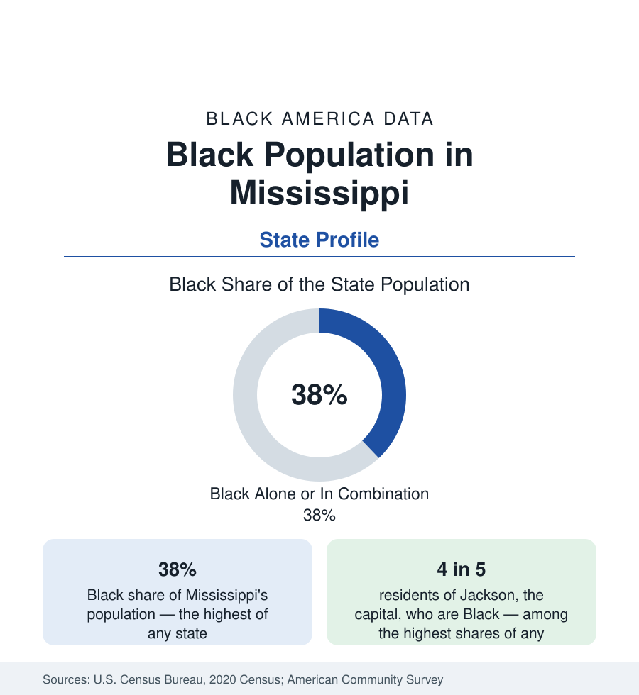

Black Census
Black Population in Mississippi: The Highest Share in America
Mississippi is the Blackest state in the union by share — about 38 percent Black in combination — with majority-Black counties across the Delta. The census profile.

Mississippi is, by proportion, the Blackest state in the United States. The decennial census counted Black Mississippians at about 37 percent of the population Black alone, and about 38 percent Black alone or in combination — the highest share of any state, a position Mississippi has held throughout the modern census era. In absolute terms the population is about 1.1 million, modest beside the giants of this series; it is the share, and what the share has meant across Mississippi's history, that makes the profile central to this reference. This article reports the state's Black population in the census data.
The Delta and the County Map
The geography of Black Mississippi is the geography of the cotton economy. The Mississippi Delta — the flat alluvial plain in the state's northwest, among the richest farmland on earth — records the country's most extensive majority-Black rural geography: county after county above 60, 70, and in Holmes County's case around 80 percent Black. The river counties, the Black Belt prairie of the east, and the Jackson metropolitan area hold most of the remainder. At the other pole, the Gulf Coast and the northeastern hill counties record shares well below the state figure. The county map of Black Mississippi is, with unusual literalness, a map of where enslaved labor was concentrated in 1860 — the demographic foundation on which everything else in the state's data rests.
Jackson: A Black Capital City
Jackson, the capital and largest city, is more than four-fifths Black — among the highest Black shares of any American city of its size — making it one of the few state capitals where Black political and civic life is the civic mainstream. Jackson State University, the state's urban HBCU, anchors its institutional life. The metropolitan area's suburbs in Rankin and Madison counties, by contrast, are majority White and among the state's most affluent, so that the Jackson metro reproduces in miniature the city-versus-ring pattern of the Washington and Chicago profiles — with the difference that here the Black core is not a plurality but an overwhelming majority, and the metro's aggregate statistics conceal one of the sharpest core-ring divides in the series.
The Weight of the Out-Migration
No state's Black population was more transformed by departure. Mississippi was the single greatest sending state of the Great Migration relative to its size: Chicago's Black population was built substantially by Mississippians, whose northward movement between the 1910s and the 1970s removed what demographers estimate as a majority of the state's young Black adults across two generations. The census record shows the residue in today's structure — an older age profile than the Southern average, counties whose populations have declined for decades, and a diaspora whose size rivals the home population: there are metropolitan areas of the North whose Mississippi-descended Black populations approach the Delta's own. Return migration exists in the Mississippi data but at smaller scale than in Georgia or Texas; the flows remain, on net, closer to balance than to reversal.
Composition and Conditions
Mississippi's Black indicators record the most difficult conditions in this reference on most measures, and the profile must state them plainly: the lowest Black median household income of any state in most survey years, among the highest Black poverty rates, and health indicators — in the data of the public health section — that include the nation's highest rates on several measures. Educational attainment has risen steadily, carried by Jackson State, Alcorn State, Mississippi Valley State, Tougaloo, and Rust — an unusually rich HBCU infrastructure for a state of three million — and by the community college system. The foreign-born share of Black Mississippi is among the nation's lowest: this is one of the most entirely native-born, deep-rooted Black populations in America, with family continuities in Delta counties extending to emancipation and beyond.
Reading the Mississippi Numbers
Mississippi teaches the series' most important distinction between share and scale in reverse: the highest share in the nation attached to a population of 1.1 million means that Mississippi's Black experience, however central to American history, is a small fraction of Black America's present numbers — while its conditions, at the hard end of nearly every distribution in this reference, define the floor against which national progress is measured. Both facts belong in any honest citation of the state's figures.
More in Black Census
The Black Population of the United States: Size, Definitions, and Distribution
The Black population of the United States totals 52.8 million — 15.4 percent of the nation. How the Census Bureau defines and counts the population, and where it lives.
Black Median Household Income in the United States
Black median household income stands at $56,490 in the Census Bureau's annual income report — how the figure is measured, how it compares, and what drives it.
The Black Poverty Rate: Levels, Children, and the Long Trend
The official Black poverty rate is 17.1 percent — against 11.1 percent nationally and 7.7 percent for non-Hispanic White Americans. How poverty is measured and what the data show.
Source: U.S. Census Bureau, 2020 Census; American Community Survey; Population Estimates Program.